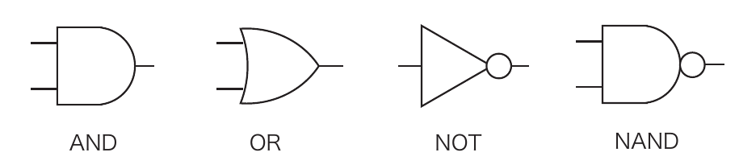
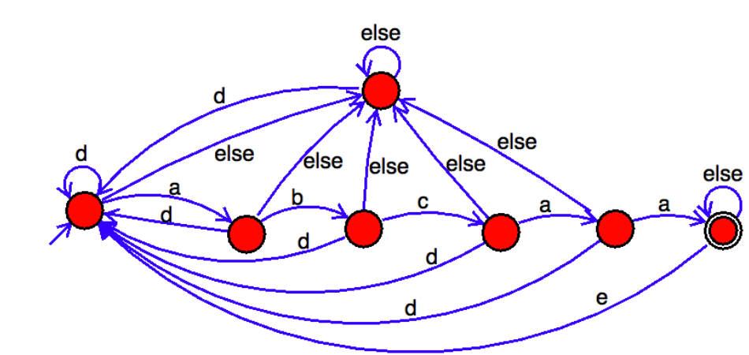

田中哲朗クラス（理科一類26,27,28,29組）｜7月28日（月）5限
ブール代数の演算規則をまとめたものを以下の表に示す。また、基本素子AND, OR, NOT, NANDをMIL記法で表現したものを以下の図に示す。
| 規則名 | 式 |
|---|---|
| 交換則 | $x_1\cdot x_2=x_2\cdot x_1$ $x_1+x_2=x_2+x_1$ |
| 結合則 | $(x_1\cdot x_2)\cdot x_3=x_1\cdot(x_2\cdot x_3)$ $(x_1+x_2)+x_3=x_1+(x_2+x_3)$ |
| 分配則 | $x_1\cdot(x_2+x_3)=x_1\cdot x_2+x_1\cdot x_3$ $x_1+x_2\cdot x_3=(x_1+x_2)\cdot(x_1+x_3)$ |
| ド・モルガン則 | $\overline{x_1\cdot x_2}=\overline{x_1}+\overline{x_2}$ $\overline{x_1+x_2}=\overline{x_1}\cdot\overline{x_2}$ |
| 否定 | $x_1=\overline{\overline{x_1}}$ |
| その他 | $x_1\cdot1=x_1,\ x_1\cdot0=0,\ x_1\cdot x_1=x_1,\ x_1\cdot\overline{x_1}=0$ $x_1+0=x_1,\ x_1+1=1,\ x_1+x_1=x_1,\ x_1+\overline{x_1}=1$ |

以下の問に答えなさい。
(a) $(x_1+\overline{x_2})\cdot(\overline{x_1}+x_2+\overline{x_3})$
(b) $x_1\cdot\overline{x_2}+\overline{x_1}\cdot x_3$
(a),(b)式に対応する真理値表を書きなさい。
(a)は2つの項$x_1+\overline{x_2}$と$\overline{x_1}+x_2+\overline{x_3}$の値をそれぞれ求めてANDをとればよい。(b)は2つの項$x_1\cdot\overline{x_2}$と$\overline{x_1}\cdot x_3$の値をそれぞれ求めてORをとればよい。$x_1,x_2,x_3$の8通りすべてについて計算すると次のようになる。
| $x_1$ | $x_2$ | $x_3$ | $x_1+\overline{x_2}$ | $\overline{x_1}+x_2+\overline{x_3}$ | (a) | $x_1\overline{x_2}$ | $\overline{x_1}x_3$ | (b) |
|---|---|---|---|---|---|---|---|---|
| 0 | 0 | 0 | 1 | 1 | 1 | 0 | 0 | 0 |
| 0 | 0 | 1 | 1 | 1 | 1 | 0 | 1 | 1 |
| 0 | 1 | 0 | 0 | 1 | 0 | 0 | 0 | 0 |
| 0 | 1 | 1 | 0 | 1 | 0 | 0 | 1 | 1 |
| 1 | 0 | 0 | 1 | 1 | 1 | 1 | 0 | 1 |
| 1 | 0 | 1 | 1 | 0 | 0 | 1 | 0 | 1 |
| 1 | 1 | 0 | 1 | 1 | 1 | 0 | 0 | 0 |
| 1 | 1 | 1 | 1 | 1 | 1 | 0 | 0 | 0 |
(a)式に対応する論理回路をAND, OR, NOTの3種類を使って実現し、MIL記法で書きなさい。
(a)式$(x_1+\overline{x_2})\cdot(\overline{x_1}+x_2+\overline{x_3})$は、すでに乗算標準形（POS：リテラルの論理和の論理積）で与えられているので、式の構造をそのまま素子に置き換えればよい——標準形の式は演算子の入れ子を書き出すだけで直接回路になる、という教科書的な直接実装である。
(b)式に対応する論理回路を二入力のNANDを使って実現し、MIL記法で書きなさい。ただし、使って良いNAND素子は5個以下とする。
(b)式$x_1\overline{x_2}+\overline{x_1}x_3$は積和標準形（SOP：リテラルの論理積の論理和）で与えられている。SOP形の式は「NAND-NANDの2段構成」で必ず実現できる——各積項を1個のNANDで作り（否定つきの積になる）、それらのNANDでもう一度NANDをとると、ド・モルガンの法則により否定が打ち消しあってちょうどORが得られる、という一般的なテクニックである。
$g_1,g_2$で$\overline{x_2},\overline{x_1}$をNAND（同じ入力を2本つないだNANDはNOTとして働く）で作り、$g_3,g_4$で2つの積項をそれぞれ否定つきで作り、最後に$g_5$で$g_3,g_4$をNANDすることで、ド・モルガンの法則$\overline{\overline{A}\cdot\overline{B}}=A+B$により両積項のORがそのまま得られる。
乗算標準形（和積標準形、リテラルの論理和の論理積で表現）で表された(a)式を加算標準形（積和標準形、リテラルの論理積の論理和で表現）で表しなさい。また、加算標準形で表された(b)式を乗算標準形で表しなさい。
(a)：POS→SOP。(1)の真理値表で(a)が1になる行は000,001,100,110,111の5行。各行についてそのまま各変数を（値が1ならその変数、0ならその否定を）ANDした「ミンターム」を作り、それらをORでつなげば標準形（主加法標準形）が得られる。
（補足：標準形としては上のミンターム形が正解だが、$\overline{x_1}\,\overline{x_2}\,\overline{x_3}+\overline{x_1}\,\overline{x_2}\,x_3=\overline{x_1}\,\overline{x_2}(\overline{x_3}+x_3)=\overline{x_1}\,\overline{x_2}$、$x_1x_2\overline{x_3}+x_1x_2x_3=x_1x_2$のように簡略化できることにも注目しておくとよい。）
(b)：SOP→POS。(1)の真理値表で(b)が0になる行は000,010,110,111の4行。各行について「マクスターム」（値が0ならその変数自身、値が1ならその否定を使い、論理和でつないだ項）を作り、それらをANDでつなげば標準形（主乗法標準形）が得られる。
真理値表から積和標準形（SOP、加算標準形）を作るには「出力が1になる行」のミンタームを集めてORすればよく、逆に和積標準形（POS、乗算標準形）を作るには「出力が0になる行」のマクスタームを集めてANDすればよい——これは同じ真理値表の1の行と0の行のどちらに注目するかの違いにすぎない。さらに、SOP形の式は(3)で見たように「NAND-NANDの2段構成」で機械的に実現できる。双対的に、POS形の式は「NOR-NORの2段構成」で同様に実現できる（NORはORの否定であり、NANDとNORの関係はANDとORの関係にちょうど対応する）。すなわち、標準形さえ求めれば、単一種類の素子（NANDのみ、あるいはNORのみ）による実装の手順が自動的に決まる。
以下の左側の図は、ある状態数（丸の数）7のオートマトンを表している。

上の右側の表はこのオートマトンの動作を説明するチェック表である。(a)〜(e)を埋めて、チェック表を完成させなさい。
| 入力 | 終了状態 |
|---|---|
| 無し | No |
| a | No |
| ac | No |
| acd | No |
| abcaa | Yes |
| abcaada | (a) |
| abcaaabcaa | (b) |
| abcadabcaa | (c) |
| adabcaae | (d) |
| abcadebabcaa | (e) |
また、以下はこのオートマトンの動作を説明したものである。(f)〜(h)を埋めて、説明を完成させなさい。
「このオートマトンでは解錠中の状態を終了状態、施錠された状態を非終了状態で表している。何も入力していない状態からパスワード(f)を入力すると解錠する。解錠状態では(g)のボタンを押すと施錠され、パスワードを何も入力していない状態に戻る。パスワード入力中に(h)のボタンを押すと、入力がリセットされパスワードを何も入力していない状態に戻る。」
まず(f)〜(h)を図から直接読み取る。与えられた例「abcaa」が既にYes（解錠）になっていることから、パスワードは(f) abcaa（a,b,c,a,aの5文字）である。図で各中間状態にある"d"のラベルの矢印はいずれも開始状態（パスワード未入力の状態）へ戻る矢印なので、これはパスワード入力中の取消・リセットボタンであり(h) d。右端の受理状態（解錠状態）から開始状態へ戻る長い矢印のラベルは"e"であり、これは解錠状態での施錠ボタンなので(g) e。
この読み取りに基づいて、オートマトンの状態を左から $S_0$（開始・施錠、"d"で自己ループ）$\to S_1$（"a"を1文字読んだ）$\to S_2$（"ab"）$\to S_3$（"abc"）$\to S_4$（"abca"）$\to S_5$（"abcaa"＝受理・解錠）とし、これに加えて非受理の「わな」状態が1つある（合計7状態）。遷移規則は次の通り：
この規則で(a)〜(e)の各入力を1文字ずつシミュレーションする。
「0」,「1」,「2」からなる3進数を「上位」の桁から入力して、入力された数が4の倍数の時に終了状態になる「状態数4以下の」オートマトンを作成して図にしなさい。何も入力されていない時の数は0とする。
上位桁から入力する場合、状態には「これまでに読んだ値を4で割った余り」だけを持たせればよい。桁を1つ読むごとに、これまでの値$s$は3倍されて新しい桁$d$（0,1,2）が足された値$3s+d$になるので、状態遷移は $\bmod4$ の世界で $s \mapsto (3s+d)\bmod4$ となる。剰余は0,1,2,3の4通りなので、状態数4で実現できる。開始状態も受理状態も剰余0の状態（「何も入力されていない時の数は0」であり、0は4の倍数）。
| 状態（余り） | 0を読む | 1を読む | 2を読む |
|---|---|---|---|
| 0（受理・開始） | 0 | 1 | 2 |
| 1 | 3 | 0 | 1 |
| 2 | 2 | 3 | 0 |
| 3 | 1 | 2 | 3 |
検算：3進数「20」（10進 $2\times3+0=6$、4の倍数ではない）：余り0→(2を読む)→余り2→(0を読む)→余り2。最終余り2で受理せず、$6\bmod4=2$と一致 ✓。3進数「100」（10進9）は4の倍数ではないが、「111」（10進13）も4の倍数でない。3進数で4の倍数になる最小の非自明な例として「111$_3$+3=…」ではなく直接「$8=22_3$」を検算する：余り0→(2を読む)→余り2→(2を読む)→$(3\times2+2)\bmod4=8\bmod4=0$。最終余り0で受理、$8$は4の倍数 ✓。
「0」,「1」からなる2進数を「下位」の桁から入力して、入力された数が3の倍数の時に終了状態になる「状態数6以下の」オートマトンを作成して図にしなさい。何も入力されていない時の数は0とする。
下位桁から入力する場合、(2)のように「これまでの値mod3」だけを状態にするのでは不十分である。理由は桁の重みにある：2進数の桁の重みは$2^0,2^1,2^2,\dots$であり、これを3で割った余りは $2^0\equiv1,\ 2^1\equiv2,\ 2^2\equiv1,\ 2^3\equiv2,\dots\pmod3$ と、周期2で「1,2,1,2,…」を繰り返す。つまり、いま読んでいる桁が数値に与える影響（重み）が「1倍」なのか「2倍」なのかは、下から数えて奇数番目・偶数番目のどちらの桁かによって変わってしまう。上位桁から読む場合は最後に読む桁が常に重み1（1の位）なので影響が単純だったが、下位桁から読む場合はこの重みの位相を状態として持ち歩く必要がある。
そこで状態を $(r,w)$（$r$=これまでの値を3で割った余り、$w\in\{1,2\}$=次に読む桁の重みが3を法として1か2か）の組とする。剰余3通り×重みの位相2通りで状態数6となる。開始状態は $(0,1)$（値0、最初に読む桁は$2^0$で重み1）。ビット$b$を読むと、
受理状態は余り$r=0$であるもの、すなわち $(0,1)$ と $(0,2)$ の2つ（重みの位相にかかわらず余りが0なら3の倍数）。全6状態の遷移表は以下の通り。
| 状態 $(r,w)$ | 0を読む | 1を読む |
|---|---|---|
| $(0,1)$（受理・開始） | $(0,2)$ | $(1,2)$ |
| $(0,2)$（受理） | $(0,1)$ | $(2,1)$ |
| $(1,1)$ | $(1,2)$ | $(2,2)$ |
| $(1,2)$ | $(1,1)$ | $(0,1)$ |
| $(2,1)$ | $(2,2)$ | $(0,2)$ |
| $(2,2)$ | $(2,1)$ | $(1,1)$ |
検算：入力列「0,1,1」を下位桁から順に与える（最初に読む文字が$2^0$の位、次が$2^1$の位、最後が$2^2$の位）。$(0,1)\xrightarrow{0}(0,2)\xrightarrow{1}(2,1)\xrightarrow{1}(0,2)$。最終状態$(0,2)$は受理状態である。この入力列は下位桁から「0,1,1」の順で読まれているので、通常の（上位桁が先の）表記に直すと「1,1,0」すなわち2進数110＝10進6であり、確かに3の倍数——受理と一致する ✓。
もう1つ：入力列「1」（1文字だけ、$2^0$の位が1で終了）。$(0,1)\xrightarrow{1}(1,2)$。最終状態$(1,2)$は余り1で受理せず。2進数「1」＝10進1は3の倍数ではないので一致 ✓。
(2)と(3)を比べると、同じ「$N$の倍数判定」でも、上位桁から読む場合は「値mod$N$」だけを状態にすればよく状態数は$N$個で済む一方、下位桁から読む場合は「値mod$N$」に加えて「次に読む桁の重みが$N$を法として何に対応するか」という位相情報も状態に持たせる必要があり、状態数が余分に増える（一般には桁の重み$2^k\bmod N$の周期の長さの分だけ倍増する）。これは、上位桁から読むときは新しい桁が来るたびに既存の値を基数倍してから足すという操作が常に同じ形（$s\mapsto (\text{基数}\cdot s+d)\bmod N$）で済むのに対し、下位桁から読むときは既存の値に足す量が「桁の位置」に応じて変わってしまう（$s\mapsto (s+d\cdot 2^k)\bmod N$ の$2^k\bmod N$が桁ごとに違う）ことに由来する。同じ計算でも情報を読む順序次第で、有限状態機械として表現するのに必要な「記憶」の量が変わる、という好例である。